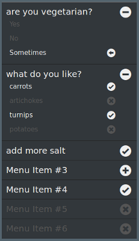
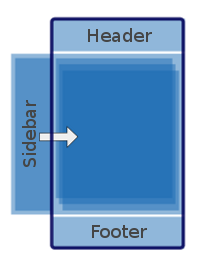

Written by a newbie, the purpose of this series of posts is to help my newbies colleagues getting started, while not being overhelmed with the zillions of goodies Firefox benefits at today.
Someone told me I should have named it the "no-jquery stub," but that is not my intent. I'm not using jquery and al. because I don't need it yet. I want to keep the largest audience getting started with the basics: HTML5, CSS3. No offense, that's all.
git clone https://github.com/Jaxo/fxosstub
To access a specific "episode", cd to the fxosstub
directory and issue:
git checkout "episode_1" <= CHECK ME BEFORE TO POST!
But wait, not yet. We need first to design the layout of an important piece of Webapps: Menus.
Our preferences require a special attention, since it is not so easy to layout.
Look, for instance, all the work Android did for presenting
Preferences. The Mozilla Simulator, itself, does a special interpretation for
the layout of <SELECT><OPTION>…
Googl'in on the WEB, one can find thousands of examples explaining how to create menu lists, with drop-downs, etc. However, I wasn't so happy with, mainly because (i) some were encumbered, not so obvious, (ii) difficult to put in place, (iii) had a layout more or less adapted for relatively small touch-screens.
| 1. checks | On: | | Off: | | |||
| 2. radios | On: | | Off: | [no icon] | |||
| 3. lists | Expand: | | Collapse: | |
Unicode —all browsers support it — permits to define up to 65535 glyphs, including much more than the latin alphabet. The icons above are defined between positions U+F000 and U+F02E within a range sometimes known as the "Microsoft Symbol Area". Not all fonts support this range. The one I used is from ZURB, as it appeared to me it got some reputation within the Firefox mobile communauty.
Using "glyphs" has several advantages, one of it being to easily be integrated with CSS.
The CSS3 @font-face rule opens
new possibilities at "using the font we want".
In the CSS of fxosstub episode II, I simply declared:
@font-face {
font-family: "GeneralEnclosedFoundicons";
src: url(font/general_enclosed_foundicons.ttf) format("truetype");
}
and it gave me access to all the icons that I use in my menus,
with a payload nothing more than:
[role=radiogroup] li[aria-selected=true]:before {
content: "\f015";
}
which translates, in native human language, as:The CSS rule above may look cryptic for a newbie, as it was for me the first time I read this line. What is role, and what means ARIA???
In the previous example, [role=radiogroup]
is a standard
CSS attribute selector
matching the presence of the role attribute name
whose value is exactly "radiogroup".
The role attribute name appears with (XHTML and) HTML 5.
It is used to carry metainformation, describes the purpose of the element.
In the HTML source, <UL role="radiogroup"> indicates
"a list grouping mutually exclusive items", e.g. radio buttons,
for which the corresponding CSS rule provides the appropriate style.
Similarly, li[aria-selected=true] indicates a list item in a
selected state.
Where does the aria- prefix comes from?
Soon, the W3C realized that there might be several other attributes
than just role for assigning semantics.
It would have been an unending task trying to enumerate
them all. They decided to prefix them with aria-
(or data-) and let people choose what it should be followed by.
Among those people, the Web Accessibilty Initiative - Accessible Rich Internet Applications recommended a vocabulary, hence the "ARIA" prefix.
menuList, to describe a list
grouping all of our menu items;
|  |
<UL class="menuList" onclick="menuListClicked(event);">
<LI role="listbox">are you vegetarian?
<UL role="radiogroup">
<LI>Yes</LI>
<LI>No</LI>
<LI aria-selected="true">Sometimes</LI>
</UL>
</LI>
<LI role="listbox">what do you like?
<UL>
<LI>carrots</LI>
<LI aria-selected="true">artichokes</LI>
<LI>turnips</LI>
<LI>potatoes</LI>
</UL>
</LI>
<LI>add more salt</LI>
<LI role="listbox">Menu Item #3
<UL>
<LI>submenu 3.1</LI>
<LI role="listbox">submenu 3.2
<UL role="radiogroup">
<LI>sub-submenu 3.2.1</LI>
<LI>sub-submenu 3.2.2</LI>
</UL>
</LI>
<LI>submenu 3.3</LI>
</UL>
</LI>
<LI aria-selected="true">Menu Item #4</LI>
<LI>Menu Item #5</LI>
<LI>Menu Item #6</LI>
</UL>
|
aria-expanded state.
are you vegetarian? and what do you like?
Yes, No, […], carrots […])
Then I unchecked artichokes, checked carrots,
turnips, and add more salt making the icons go
or
, changing as well the value of the
aria-selected attribute.
All these actions were realized by a relatively simple javascript function:
menuListClicked(), as shown at the first line of the HTML above.
The script is triggered by an onclick
event, at any place inside the area covered by
the <UL>…</UL> list.
The original item which was clicked on is known through the event.target
property, bubbling up from the <LI> to its <UL>
parent.
Here is the (pure JavaScript) code:
function menuListClicked(event) {
var liElt = event.target; // the clicked <LI> in a menulist class
if (liElt.getAttribute("role") == "listbox") {
var ulChildElt = liElt.getElementsByTagName("UL")[0];
if (ulChildElt != null) { // defense!
if (liElt.getAttribute("aria-expanded") == "true") {
liElt.removeAttribute("aria-expanded");
ulChildElt.style.display = "none";
}else {
liElt.setAttribute("aria-expanded", "true");
ulChildElt.style.display = "block";
}
}
}else {
var role = getAttribute(liElt.parentNode, "role");
if (liElt.getAttribute("aria-selected") == "true") {
if (role != "radiogroup") {
// selecting a selected item in a radiogroup does nothing..
// however for lambda lists, it deselects the item
liElt.removeAttribute("aria-selected");
}
}else {
if (role == "radiogroup") {
// selecting a new item in a radiogroup deselects its siblings
var siblings = liElt.parentNode.childNodes;
for (var i=0; i < siblings.length; ++i) {
if (getAttribute(siblings[i], "aria-selected") == "true") {
siblings[i].attributes.removeNamedItem("aria-selected");
}
}
}
liElt.setAttribute("aria-selected", "true");
}
}
}
This ended my first effort at realizing an effective "menu layout".
It worked as I wanted to.
Obviously, saving preferences is required, but my plans is to do it later.
Nowadays, I have no ideas on how to use a local cache, and what the difference
with cookies.
My only hope is that this will be a starting point for you to enhance it and adapt it to your needs.
Now is the time for all good men... to put buttons at work, e.g. navigation, and page transitions.
For mobile devices, I found this approach specially attractive: this is what I will use. The WML (Wireless Markup Language) ancestor already had the notion of "Deck and Cards", back in... 1998!
Here is a basic example of this technique:
01 <HTML>
02 <HEAD>
03 <STYLE type="text/css">
04 .body { position: absolute; top: 30px; bottom: 30px; left: 30px; right: 30px; }
05 </STYLE>
06 <SCRIPT type="text/javascript">
07 function changePage(w) {
08 var elt1 = document.getElementById('p2');
09 var elt2 = document.getElementById('p1');
10 if (elt1.style.display=="none") {
11 (elt1.style.display="block");
12 (elt2.style.display="none");
13 }else {
14 (elt1.style.display="none");
15 (elt2.style.display="block");
16 }
17 }
18 </SCRIPT>
19 </HEAD>
20 <BODY onclick="changePage();">
21 <DIV id="p1" class="body" style="display:block">Hello</DIV>
22 <DIV id="p2" class="body" style="display:none">Firefox!</DIV>
23 </BODY>
24 </HTML>
| [line 20] | when the mouse is clicked within the body, it calls the JavaScript function changePage() |
| [lines 07 to 17] | changePage() hides <DIV id="p1"> and shows <DIV id="p2"> if <DIV id="p1"> was shown, and vice-versa |
| [lines 04, 21, 22] |
<DIV id="p1"> and <DIV id="p2"> are superimposed, because both belongs
to the body class, which has its position defined as being
absolute
The reader gets the impression a new page has been fetched, while, underneath, the data stays the same (no HTTP request) |
The trick consists in changing the style from:
display:none → block
to a value able to be incremented:
opacity:0.0 → 1.0
The browser rendering engine will then be able to make the style changes evolve, decrementing or incrementing the opacity value along the transition time.
And this is the second and last change to create the page transition.
In the CSS, for the .body rule, the CSS is informed that there
is a transition, values will change linearly, lasting 2s total:
.body {
position:absolute; top:30px; bottom:30px; left:30px; right:30px;
transition: linear 2s;
}
Below is the modified example, in order to show the opacity transition. I added ravishing colors painting the DIV backgrounds for amplifying the effect.
<HTML>
<HEAD>
<STYLE type="text/css">
.body {
position:absolute; top:30px; bottom:30px; left:30px; right:30px;
transition: linear 2s;
}
</STYLE>
<SCRIPT type="text/javascript">
function changePage(w) {
var elt1 = document.getElementById('p2');
var elt2 = document.getElementById('p1');
if (elt1.style.opacity==0) {
(elt1.style.opacity="1");
(elt2.style.opacity="0");
}else {
(elt1.style.opacity="0");
(elt2.style.opacity="1");
}
}
</SCRIPT>
</HEAD>
<BODY onclick="changePage();">
<DIV id="p1" class="body" style="opacity:0;background-color:pink">Hello</DIV>
<DIV id="p2" class="body" style="opacity:1;background-color:skyblue">Firefox!</DIV>
</BODY>
</HTML>
Notice that CSS transitions do not act only on opacity, but on any value the changes of which can be incrementally done: positions, etc. See this article on MDN. For example, the Menu I previously described, will be sliding from the left, while the body main pages use opacity transitions.
Actually — as seen in episode I —, the skeleton of fxosstub HTML document (index.html) is like this:
<HTML> <HEAD> <!-- […] --> </HEAD> <BODY> <HEADER> <!-- a mainbutton, a title, a menu bar --> </HEADER> <DIV class="body"> <!-- the main central area --> </DIV> <FOOTER> <!-- another menu bar (sub-actions) --> </FOOTER> </BODY> </HTML>To prepare it to handle multiple plain pages, I first made some changes:
<HTML> <HEAD> <!-- […] --> </HEAD> <BODY> <HEADER> <!-- a mainbutton, a title, a menu bar --> </HEADER> <DIV id="main"> <DIV id="p1" class="body"> <!-- page P1 in the main central area --> </DIV> <DIV id="p2" class="body"> <!-- page P2 in the main central area --> </DIV> <!-- [other pages] --> </DIV> <DIV id="sidebar" class="body"> <!-- Here goes the Menu --> </DIV> <FOOTER> <!-- another menu bar (sub-actions) --> </FOOTER> </BODY> </HTML> |  |
I choose an "id" attribute when it must occur only once in the document, and "class" when it should occur several times. To me, "role" is of another engence. It's a matter of taste, setting the fuzzy frontier between "role" and "structure".
Solution #1: navigate to a target element
An address such as
http://www.example.com/index.html#abcd
makes the browser navigates to the HTML document at
http://www.example.com/index.html AND, within this page,
pursues up to a fragment identified by
abcd,
that is:
the part of the HTML document enclosed
in an element — a "tag" — the id attribute of which has the
value abcd.
This element gets known in the navigator location as THE current unique target.
CSS 3 invented the pseudo-class target, which selects THE currently
targeted element.
Example:
.body:target { opacity: 1; }
means: when an element of the body class is set as the target,
its opacity becomes 1.0 — it is fully opaque.
A main page is one of the siblings DIV, of class body
identified by id=p1, p2, ... pn,
inside the <DIV id="main"> parent.
- If one of these main page DIVs becomes a target, then it will have
an opacity value of 1.0 (opaque).
- Its siblings — that can not be targeted anymore —
have their default opacity of 0.0 (transparent).
From there, the rest was easy to accomplish: bind a click of all footer's button
to a navigational change,
that is: [click on button 'n'] ⇒ window.location='#pn';
In fxosstub.js episode I,
this instruction would have replaced the doSomething()
found in the function activate() at line 138.
I implemented this solution, but finally got rid of it. The main reason was consistency. I'd better re-use identical strategies. However, I thought it might be interesting to share this feature with you.
Solution #2: make use of the aria- states
The <FOOTER> element in fxosstub episode I was:
<FOOTER>
<TABLE><TR>
<TD onclick="activate(this, function() { alert('Write Pressed'); });">Write</TD>
<TD onclick="activate(this, 'something');">Read</TD>
<TD onclick="activate(this, 'something');"><IMG src="style/images/send.png"></TD>
</TR></TABLE>
</FOOTER>
activate() was exclusively setting
the class of the clicked <TD> to "activated".
The second parameter of activate() was a place holder for
a function, binding an action to the given activation.
Revamping the <FOOTER> structure in view of what I learnt before, it becomes:
<FOOTER onclick="footerClicked(event);"> <TABLE><TR> <TD aria-owns="p1" id="fdflt">Write</TD> <TD aria-owns="p2">Page 2</TD> <TD aria-owns="p3"><IMG src="style/images/send.png"></TD> </TR></TABLE> </FOOTER>
footerClicked takes the exact same approach as what I described above for
menuListClicked for an item in a radiogroup,
but, in addition, it turns on the aria-selected state
of the DIV identified by the value of aria-owns.
I was tempted to merge footerClicked and menuListClicked in one unique function, but that would have been exactly what I do not want to do. It would have lead to less readable code, for the sake of what? Unity in abstracting concept? Pfff. Experience shows that it wouldn't solve all the cases, missing the ones specific to YOUR application. Worst, it would make you waste your time trying to learn and keep a so-said concept for generality, while it's not prooved in concrete that such a concept is valid. KISS (Keep It Simple, Stupid) is the gold rule for these posts.
id="fdflt" is simply a way to show my first page with one of the
footer button in the clicked state: before the end of the BODY, I issue
document.getElementById('fdflt').click();
Now, my Main Pages Transition is almost done, just a matter of a few changes in the fxosstub.css
.body {
position: absolute;
left: 0;
right: 0;
top: 1rem;
bottom: 1rem;
margin-left: 1rem;
margin-right: 1rem;
opacity: 0;
transition: linear 0.2s;
z-index: -100;
}
.body[aria-expanded=true] {
opacity: 1;
z-index: 100;
}
- Pressing the upper-left Menu button, the Menu bar slides from the left,
up to its width.
- The upper-left button changes for Back.
- Pressing on Back does the reverse effect.
This is accomplished by:
id="sidebar"
It hides the corresponding DIV
by defining its right position at 100% from the right side of the screen
.body#sidebar {
left: 0;
right: 100%;
top: 6rem;
bottom: 6rem;
margin-right: 0rem;
opacity: 1;
transition: linear 0.2s;
overflow-y: auto;
}
toggleSidebarView.
It is triggered by a press on the Menu button.
It moves the body and the sidebar DIVs 80%
to the right, changes the upper-left button from "Menu" to Back";
or does the reverse base on the value of the left position of the
body DIV.
function toggleSidebarView() {
var btnMainStyle = document.getElementById('btnMainImage').style;
var bodyStyle = document.getElementById('main').style;
var sidebarStyle = document.getElementById('sidebar').style;
if (bodyStyle.left != "80%") {
btnMainStyle.backgroundImage = "url(style/images/back.png)";
bodyStyle.left = "80%";
bodyStyle.right = "-80%";
sidebarStyle.left = "0%";
sidebarStyle.right = "20%"; /* (100-80)% */
}else {
btnMainStyle.backgroundImage = "url(style/images/menu.png)";
bodyStyle.left = "0%";
bodyStyle.right = "0%";
sidebarStyle.left = "-80%";
sidebarStyle.right = "100%";
}
}
And this ends the episode II of fxosstub.